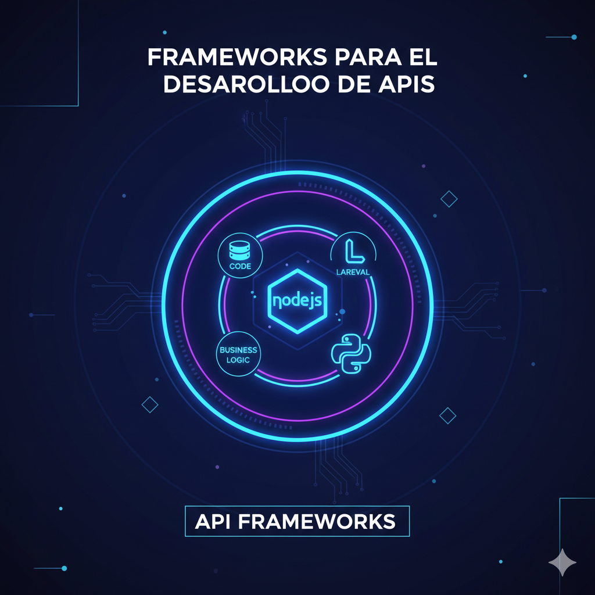
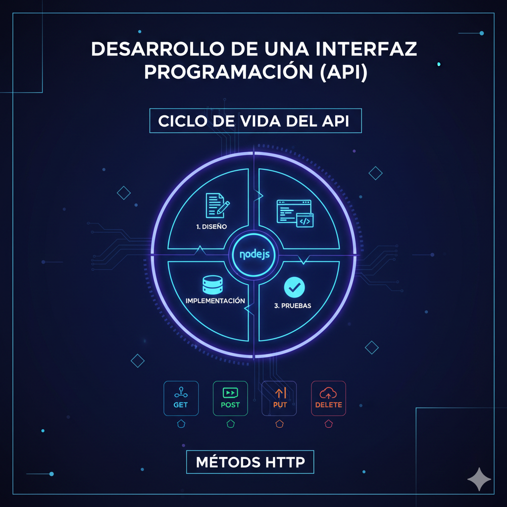

Unidad 3: Desarrollo de APIs
Construcción de interfaces modernas y escalables para el intercambio de datos.
1. Frameworks para el desarrollo de APIs
Los frameworks son conjuntos de herramientas y librerías que facilitan la creación de APIs al proporcionar una base sólida para el ruteo, la autenticación y el manejo de peticiones. Su uso permite a los desarrolladores enfocarse en la lógica de negocio en lugar de la configuración de bajo nivel.
En entornos como Node.js, PHP y Python, estos frameworks optimizan el rendimiento y aseguran que la comunicación entre sistemas siga estándares globales de seguridad y eficiencia.

Herramientas Líderes
Algunos ejemplos incluyen Express.js por su velocidad en Node.js, Laravel por su ecosistema robusto en PHP, y FastAPI por su tipado moderno en Python.
2. Desarrollo de una interfaz de programación (API)
El proceso de desarrollo de una API consiste en diseñar y exponer puntos finales (endpoints) que permiten a diferentes aplicaciones interactuar entre sí. Este proceso define cómo un cliente debe solicitar información y qué respuesta recibirá del servidor.
Una API bien desarrollada debe ser intuitiva, estar correctamente documentada y utilizar métodos HTTP estándar como GET, POST, PUT y DELETE para representar las operaciones básicas de datos (CRUD).

Ciclo de Vida
Inicia con la definición de la arquitectura (como REST), seguido por la implementación de la lógica, la conexión a la base de datos y finaliza con las pruebas de integración en herramientas como Postman.